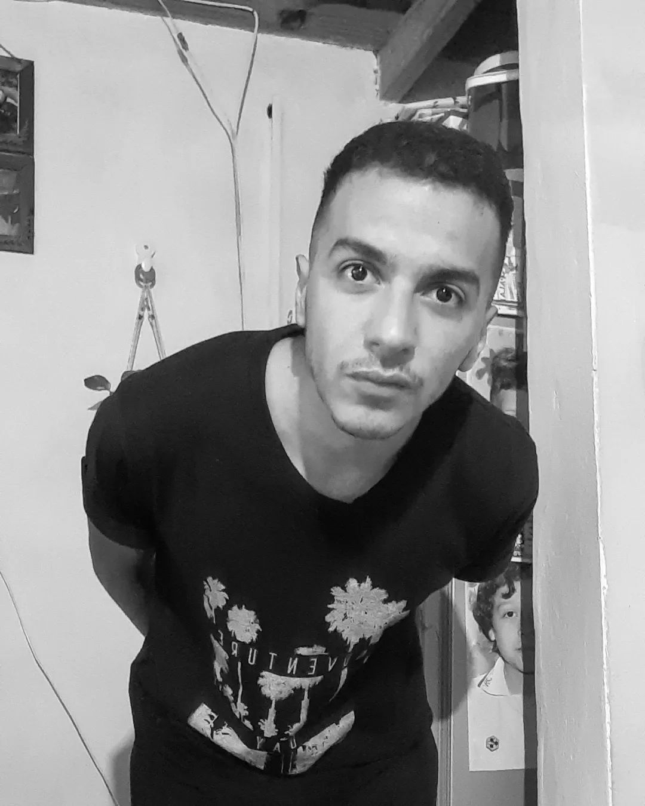

Página web (beta versión)
LAUTARO MEDINA
Dibujante apasionado de la figura humana, realismo, black and gray
 Pagina de instagramUn camino de perseverancia
Más allá de los trabajos mostrados en este artículo como esta práctica en sí, quiero resaltar que con estar seguido elaborando un proyecto, aunque los días no sean los mejores se pueden lograr cosas maravillosas sea cual sea el ámbito donde estés
Año 2016


Año 2017


Año 2019

Año 2020


Año 2021-2022


El comienzo de todo
Me tocaba dibujar con la imaginación lo único que se venía a la cabeza era un dibujo de una figura humana con unos palitos el círculo y listo no era tan difícil, mi madre dibujaba muy bien y le pedía a ella que me los haga para el colegio entre cargadas y burlas de algunos compañeros no le di tanta importancia era eso o mostrar algo desastroso en una cartulina o afiche para algún examen oral
Cuando cumplí 16 años tenía un dibujo guardado, obviamente no era mio pero como estaba aburrido lo copie y me salió bastante bien, después de verlo me quede pensando y dije "que pasaría si a partir de ahora comienzo, ¿mejoraré o perderé solo el tiempo y si no lo logro?", después algunos días empecé agarre un lápiz y comencé
Sip, la frustración está todo el tiempo
Esto está desparejo, no me sale, a la mi****, pero como lo quería lograr y yo sabía que iba a mejorar el tiempo no me importaba, aunque me demore años por ver una mejora
Lo maravilloso no lo ves hasta que observas todo lo que recorriste
Después de algunos años estaba comenzado otro retrato, uno como el del montón en esa montaña de hojas, algunos los tire o los destruí, lo cual me arrepiento, en fin lo termine estuve horas y horas claro cuando uno mejora increíblemente no se da cuenta que toma más tiempo en hacerlos y buuuummmmm salió hermoso me lo quede viendo un par de minutos
Lo mágico
Es increíble el cambio así tan brusco parece magia pero llevo un proceso bastante largo, y la mejor parte es cuando lo comparas con los anteriores es oro para vos y todo ese esfuerzo lo conseguiste por ti mismo